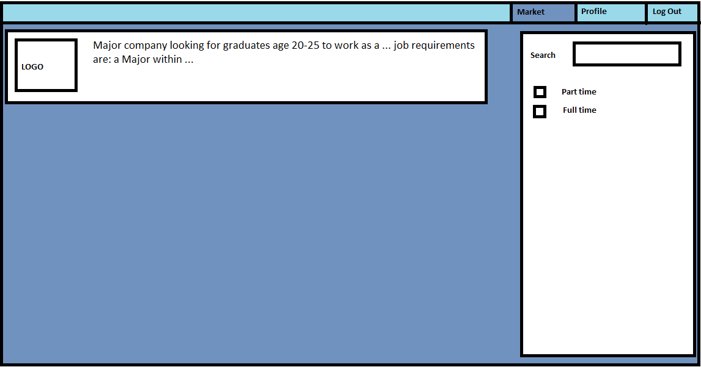
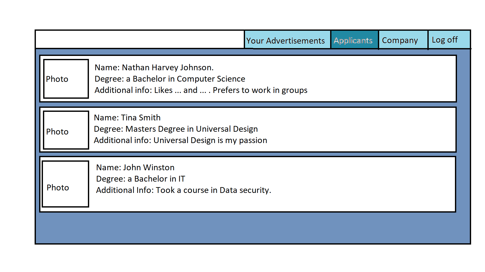

Our Solution to this problem is «Placeholder»TM. A social media platform for graduate student to get out onto the job market and get some of that much needed experience which eases their journey to the dream job longer down the road. We feel like this solution will help alot of graduates struggling to find a job after finishing their studies. It also help companies who are looking for newly graduates since it is alot cheaper using this website rather than putting an ad in the paper or something similar which in turn helps smaller companies with lower budgets hire people. The webpage will be separates into two different pages depending on if you are a company looking for employees or a graduate looking to get employed.
The graduates will look at a page like this, where they will have a couple of options. First off is the profile page where you can, like pages such as Facebook and Twitter, configure your profile by adding information about yourself and your degrees, put in what you would like to work with/ work as and also put in various companies which you could be interested. This will ensure that the graduates find the kinds of jobs they want to apply for whilst minimizing the time it takes to find said job. When you click on the "Market" button you be switched over to the job market page. This page will be tailored to the individual by using the information they provided in their profile by excluding the jobs which has jobs far outside their field of expertise. You can further narrow the selection by utilizing the window on the left hand side of the window where you can search for specific positions and choose to include only part time or full time jobs. We envision it will look like this:
Secondly there is the Companies page where different employers from various companies will post their job ads so that graduates can apply for said jobs which fits their education. The companies will like the graduates be able to manage a profile where they will have a brief description of the company: where they are located, what they specialize in etc. On the "Your advertisements" page the company will be able to post thier jobs here to for the graduates to see on their "Market" page. Companies will also be able to view their different job posts with detailed info like how many have shown an interest in the position and how many have actually applied. On the "Applicants" page the company will be able to look through the applicant sorted by each position, they will see a short description of each applicant and will also be able to easily click into the profile page of each individual applicant for further examination. They can also easily send messages to each applicant to call them to an interview if the company feels they qualify for it. We envision it will look like this:
